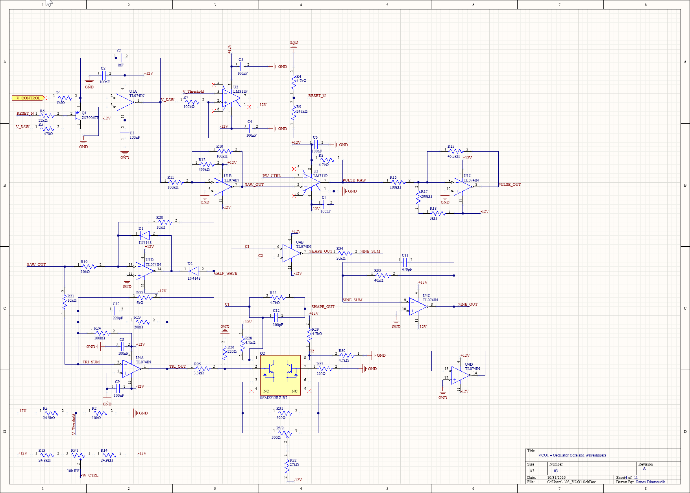

Analog Electronics · Audio Circuits
Analog Synthesizer
An analog synthesizer, in progress. The Altium project is set up with eleven sheets; the VCO is the one that is drawn and simulating. Nothing has been built yet.

Overview
The VCO block is drawn and simulating. The remaining sheets — filter, amplifier, control and output — are stubs. Hardware comes after they simulate.
Planned Subsystems
- Oscillator stage for generating the core waveform sources.
- Filter and shaping stages for tone control and sound design.
- Control interface for pitch, tuning, and playable parameters.
- Output stage suitable for speaker or line-level audio testing.
- PCB layout once the breadboarded architecture is validated.
Next Steps
Next steps are simulation cleanup, first-pass breadboard testing, signal-level checks, noise measurements, and PCB layout after the major circuit blocks are stable.